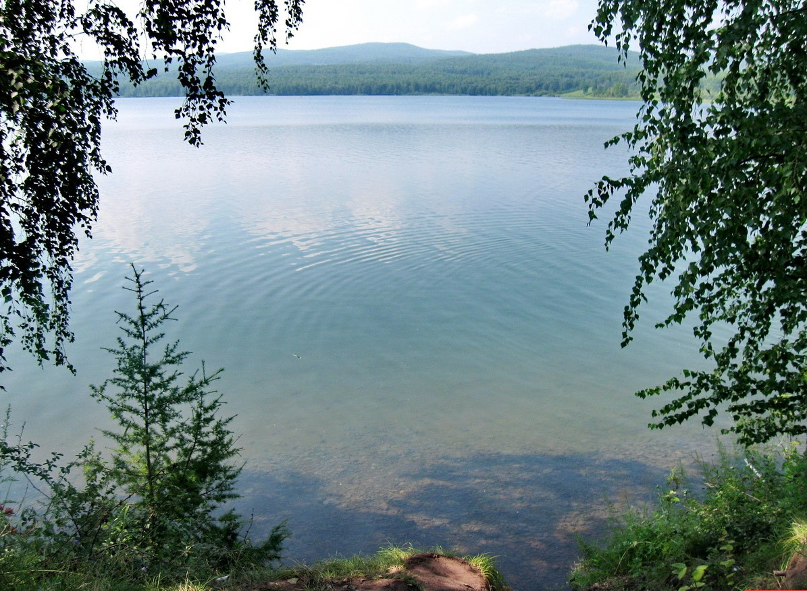

Озёра Омской области


Озеро Линёво
Расстояние от центра Омска - 244 км
Время в пути - 3,3 часа
Лучшее время для отдыха - лето
Особенности - лечебная, "живая" вода, красивая природа, при въезде взимается экологический сбор
Озеро Линево является одним из пяти загадочных озер, образовавшихся, согласно легенде, в результате падения расколовшегося на пять частей космического метеорита. Водоем расположен в Муромцевском районе Омской области, в 23 км от административного центра — поселка городского типа Муромцево, в 220 км от областной столицы — города Омска, и в 13 км от границы с Новосибирской областью, на территории которой находится лишь одно из озер данной группы — Данилово. Все пять водоемов связаны между собой разными легендами и, как предполагается, подземной рекой.
На берегах озера Линево отсутствуют здравницы и современные дома отдыха. Время от времени поднимается вопрос об их строительстве, но пока все усилия остаются на уровне идей. Единственным местом «цивилизованной» остановки является небольшой кемпинг, расположенный на юге водоема. Здесь имеется несколько летних домиков, места́ для установки палаток и разведения костров, навесы со столами и лавками, уличные туалеты и умывальники, питьевая вода и две бани, посещение которых требует предварительного заказа.

Все, кто отдыхал когда-либо на озере Линево, утверждают, что вода в нем обладает целительной силой. На полное излечение надеяться, конечно, не стоит, но в профилактических целях съездить на водоем рекомендуется. Безусловно, данный совет касается жителей ближайших районов Омской и Новосибирской областей. Логично предположить, что путешествие из дальних мест вряд ли окажется результативным и оправданным.
На самом деле, линевская вода отличается от обычной озерной. Находясь в емкости, она не портится и сохраняет первоначальные качества годами. Есть мнение ученых о том, что активность озерной воды содействует повышению жизнеспособности клеток человеческого организма, усиливает их устойчивость к негативным факторам и дарит уникальную энергетику. Не зря большинство отдыхающих увозит с собой целительную влагу в различной таре — баллонах, канистрах, бидонах. Жаль только, что феномен уникальной силы озера Линево наукой пока не разгадан.
Местные жители уверяют, что в утонуть в водоеме невозможно, так как Линево, якобы, выталкивает купающихся к поверхности воды. Насколько это предположение верно, сказать сложно. Во всяком случае, фактов гибели людей на озере зафиксировано не было. Еще одно поверье связано с периодическим появлением НЛО в районе пяти озер. Любители острых ощущений приезжают сюда в надежде когда-либо встретиться с инопланетными существами. Но научных свидетельств подобных аномалий не существует, а красочные рассказы местных «уфологов» связаны, скорее, с подогревом интереса к здешним местам и с версией метеоритного происхождения водоема.
Вода в озере очень чистая, о чем свидетельствуют заросли кувшинок. Летом она хорошо прогревается, поэтому купаются здесь практически все. Берега водоема — пологие, есть песчаные пляжи, на одном из которых даже установлена вышка для прыжков в воду. Вокруг — живописная природа, свежий воздух с целебными хвойными ароматами. В лесу растут грибы и ягоды.
Несмотря на удаленность уникального водного объекта от крупных населенных пунктов, определенные трудности с доступом и низкий уровень оборудованности туристических стоянок, озеро Линево посещают тысячи отдыхающих. Популярность этих мест объясняется уверенностью в целительных свойствах воды и удивительной чистотой окружающей природы. И хотя оздоровительный эффект и метеоритное происхождение пяти озер официально не доказаны, существует поверье о том, что искупавшись в каждом из них по очереди, можно излечиться сразу от всех недугов и омолодиться.